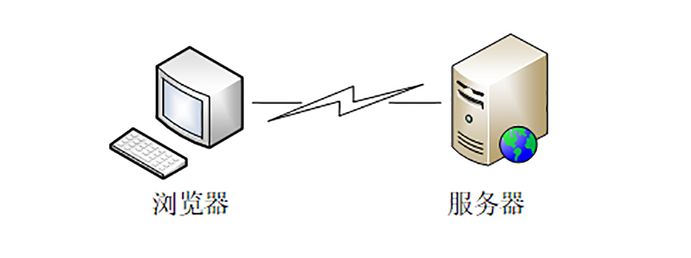
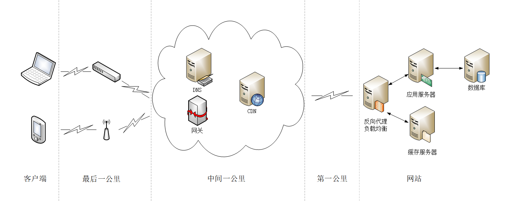
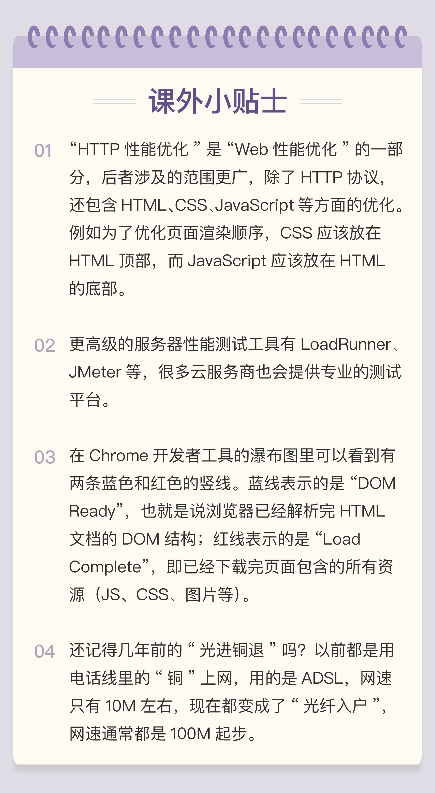

- 00 开篇词｜To Be a HTTP Hero.md.html
- 01 时势与英雄：HTTP的前世今生.md.html
- 02 HTTP是什么？HTTP又不是什么？.md.html
- 03 HTTP世界全览（上）：与HTTP相关的各种概念.md.html
- 04 HTTP世界全览（下）：与HTTP相关的各种协议.md.html
- 05 常说的“四层”和“七层”到底是什么？“五层”“六层”哪去了？.md.html
- 06 域名里有哪些门道？.md.html
- 07 自己动手，搭建HTTP实验环境.md.html
- 08 键入网址再按下回车，后面究竟发生了什么？.md.html
- 09 HTTP报文是什么样子的？.md.html
- 10 应该如何理解请求方法？.md.html
- 11 你能写出正确的网址吗？.md.html
- 12 响应状态码该怎么用？.md.html
- 13 HTTP有哪些特点？.md.html
- 14 HTTP有哪些优点？又有哪些缺点？.md.html
- 15 海纳百川：HTTP的实体数据.md.html
- 16 把大象装进冰箱：HTTP传输大文件的方法.md.html
- 17 排队也要讲效率：HTTP的连接管理.md.html
- 18 四通八达：HTTP的重定向和跳转.md.html
- 19 让我知道你是谁：HTTP的Cookie机制.md.html
- 20 生鲜速递：HTTP的缓存控制.md.html
- 21 良心中间商：HTTP的代理服务.md.html
- 22 冷链周转：HTTP的缓存代理.md.html
- 23 HTTPS是什么？SSLTLS又是什么？.md.html
- 24 固若金汤的根本（上）：对称加密与非对称加密.md.html
- 25 固若金汤的根本（下）：数字签名与证书.md.html
- 26 信任始于握手：TLS1.2连接过程解析.md.html
- 27 更好更快的握手：TLS1.3特性解析.md.html
- 28 连接太慢该怎么办：HTTPS的优化.md.html
- 29 我应该迁移到HTTPS吗？.md.html
- 30 时代之风（上）：HTTP2特性概览.md.html
- 31 时代之风（下）：HTTP2内核剖析.md.html
- 32 未来之路：HTTP3展望.md.html
- 33 我应该迁移到HTTP2吗？.md.html
- 34 Nginx：高性能的Web服务器.md.html
- 35 OpenResty：更灵活的Web服务器.md.html
- 36 WAF：保护我们的网络服务.md.html
- 37 CDN：加速我们的网络服务.md.html
- 38 WebSocket：沙盒里的TCP.md.html
- 39 HTTP性能优化面面观（上）.md.html
- 40 HTTP性能优化面面观（下）.md.html
- 结束语 做兴趣使然的Hero.md.html
- 捐赠
39 HTTP性能优化面面观（上）
“透视 HTTP 协议”这个专栏已经陪伴了你近三个月的时间，在最后的这两讲里，我将把散落在前面各个章节的零散知识点整合起来，做一个总结，和你一起聊聊 HTTP 的性能优化。
由于 HTTPS（SSL/TLS）的优化已经在[第 28 讲]里介绍的比较详细了，所以这次就暂时略过不谈，你可以课后再找机会复习。
既然要做性能优化，那么，我们就需要知道：什么是性能？它都有哪些指标，又应该如何度量，进而采取哪些手段去优化？
“性能”其实是一个复杂的概念。不同的人、不同的应用场景都会对它有不同的定义。对于 HTTP 来说，它又是一个非常复杂的系统，里面有非常多的角色，所以很难用一两个简单的词就能把性能描述清楚。
还是从 HTTP 最基本的“请求 - 应答”模型来着手吧。在这个模型里有两个角色：客户端和服务器，还有中间的传输链路，考查性能就可以看这三个部分。

HTTP 服务器
我们先来看看服务器，它一般运行在 Linux 操作系统上，用 Apache、Nginx 等 Web 服务器软件对外提供服务，所以，性能的含义就是它的服务能力，也就是尽可能多、尽可能快地处理用户的请求。
衡量服务器性能的主要指标有三个：吞吐量（requests per second）、并发数（concurrency）和响应时间（time per request）。
吞吐量就是我们常说的 RPS，每秒的请求次数，也有叫 TPS、QPS，它是服务器最基本的性能指标，RPS 越高就说明服务器的性能越好。
并发数反映的是服务器的负载能力，也就是服务器能够同时支持的客户端数量，当然也是越多越好，能够服务更多的用户。
响应时间反映的是服务器的处理能力，也就是快慢程度，响应时间越短，单位时间内服务器就能够给越多的用户提供服务，提高吞吐量和并发数。
除了上面的三个基本性能指标，服务器还要考虑 CPU、内存、硬盘和网卡等系统资源的占用程度，利用率过高或者过低都可能有问题。
在 HTTP 多年的发展过程中，已经出现了很多成熟的工具来测量这些服务器的性能指标，开源的、商业的、命令行的、图形化的都有。
在 Linux 上，最常用的性能测试工具可能就是 ab（Apache Bench）了，比如，下面的命令指定了并发数 100，总共发送 10000 个请求：
ab -c 100 -n 10000 'http://www.xxx.com'
系统资源监控方面，Linux 自带的工具也非常多，常用的有 uptime、top、vmstat、netstat、sar 等等，可能你比我还要熟悉，我就列几个简单的例子吧：
top # 查看 CPU 和内存占用情况
vmstat 2 # 每 2 秒检查一次系统状态
sar -n DEV 2 # 看所有网卡的流量，定时 2 秒检查
理解了这些性能指标，我们就知道了服务器的性能优化方向：合理利用系统资源，提高服务器的吞吐量和并发数，降低响应时间。
HTTP 客户端
看完了服务器的性能指标，我们再来看看如何度量客户端的性能。
客户端是信息的消费者，一切数据都要通过网络从服务器获取，所以它最基本的性能指标就是“延迟”（latency）。
之前在讲 HTTP/2 的时候就简单介绍过延迟。所谓的“延迟”其实就是“等待”，等待数据到达客户端时所花费的时间。但因为 HTTP 的传输链路很复杂，所以延迟的原因也就多种多样。
首先，我们必须谨记有一个“不可逾越”的障碍——光速，因为地理距离而导致的延迟是无法克服的，访问数千公里外的网站显然会有更大的延迟。
其次，第二个因素是带宽，它又包括接入互联网时的电缆、WiFi、4G 和运营商内部网络、运营商之间网络的各种带宽，每一处都有可能成为数据传输的瓶颈，降低传输速度，增加延迟。
第三个因素是 DNS 查询，如果域名在本地没有缓存，就必须向 DNS 系统发起查询，引发一连串的网络通信成本，而在获取 IP 地址之前客户端只能等待，无法访问网站，
第四个因素是 TCP 握手，你应该对它比较熟悉了吧，必须要经过 SYN、SYN/ACK、ACK 三个包之后才能建立连接，它带来的延迟由光速和带宽共同决定。
建立 TCP 连接之后，就是正常的数据收发了，后面还有解析 HTML、执行 JavaScript、排版渲染等等，这些也会耗费一些时间。不过它们已经不属于 HTTP 了，所以不在今天的讨论范围之内。
之前讲 HTTPS 时介绍过一个专门的网站“SSLLabs”，而对于 HTTP 性能优化，也有一个专门的测试网站“WebPageTest”。它的特点是在世界各地建立了很多的测试点，可以任意选择地理位置、机型、操作系统和浏览器发起测试，非常方便，用法也很简单。
网站测试的最终结果是一个直观的“瀑布图”（Waterfall Chart），清晰地列出了页面中所有资源加载的先后顺序和时间消耗，比如下图就是对 GitHub 首页的一次测试。

Chrome 等浏览器自带的开发者工具也可以很好地观察客户端延迟指标，面板左边有每个 URI 具体消耗的时间，面板的右边也是类似的瀑布图。
点击某个 URI，在 Timing 页里会显示出一个小型的“瀑布图”，是这个资源消耗时间的详细分解，延迟的原因都列的清清楚楚，比如下面的这张图：
图里面的这些指标都是什么含义呢？我给你解释一下：
- 因为有“队头阻塞”，浏览器对每个域名最多开 6 个并发连接（HTTP/1.1），当页面里链接很多的时候就必须排队等待（Queued、Queueing），这里它就等待了 1.62 秒，然后才被浏览器正式处理；
- 浏览器要预先分配资源，调度连接，花费了 11.56 毫秒（Stalled）;
- 连接前必须要解析域名，这里因为有本地缓存，所以只消耗了 0.41 毫秒（DNS Lookup）；
- 与网站服务器建立连接的成本很高，总共花费了 270.87 毫秒，其中有 134.89 毫秒用于 TLS 握手，那么 TCP 握手的时间就是 135.98 毫秒（Initial connection、SSL）；
- 实际发送数据非常快，只用了 0.11 毫秒（Request sent）；
- 之后就是等待服务器的响应，专有名词叫 TTFB（Time To First Byte），也就是“首字节响应时间”，里面包括了服务器的处理时间和网络传输时间，花了 124.2 毫秒；
- 接收数据也是非常快的，用了 3.58 毫秒（Content Dowload）。
从这张图你可以看到，一次 HTTP“请求 - 响应”的过程中延迟的时间是非常惊人的，总时间 415.04 毫秒里占了差不多 99%。
所以，客户端 HTTP 性能优化的关键就是：降低延迟。
HTTP 传输链路
以 HTTP 基本的“请求 - 应答”模型为出发点，刚才我们得到了 HTTP 性能优化的一些指标，现在，我们来把视角放大到“真实的世界”，看看客户端和服务器之间的传输链路，它也是影响 HTTP 性能的关键。
还记得[第 8 讲])里的互联网示意图吗？我把它略微改了一下，划分出了几个区域，这就是所谓的“第一公里”“中间一公里”和“最后一公里”（在英语原文中是 mile，英里）。

“第一公里”是指网站的出口，也就是服务器接入互联网的传输线路，它的带宽直接决定了网站对外的服务能力，也就是吞吐量等指标。显然，优化性能应该在这“第一公里”加大投入，尽量购买大带宽，接入更多的运营商网络。
“中间一公里”就是由许多小网络组成的实际的互联网，其实它远不止“一公里”，而是非常非常庞大和复杂的网络，地理距离、网络互通都严重影响了传输速度。好在这里面有一个 HTTP 的“好帮手”——CDN，它可以帮助网站跨越“千山万水”，让这段距离看起来真的就好像只有“一公里”。
“最后一公里”是用户访问互联网的入口，对于固网用户就是光纤、网线，对于移动用户就是 WiFi、基站。以前它是客户端性能的主要瓶颈，延迟大带宽小，但随着近几年 4G 和高速宽带的普及，“最后一公里”的情况已经好了很多，不再是制约性能的主要因素了。
除了这“三公里”，我个人认为还有一个“第零公里”， 就是网站内部的 Web 服务系统。它其实也是一个小型的网络（当然也可能会非常大），中间的数据处理、传输会导致延迟，增加服务器的响应时间，也是一个不可忽视的优化点。
在上面整个互联网传输链路中，末端的“最后一公里”我们是无法控制的，所以我们只能在“第零公里”“第一公里”和“中间一公里”这几个部分下功夫，增加带宽降低延迟，优化传输速度。
小结
- 性能优化是一个复杂的概念，在 HTTP 里可以分解为服务器性能优化、客户端性能优化和传输链路优化；
- 服务器有三个主要的性能指标：吞吐量、并发数和响应时间，此外还需要考虑资源利用率；
- 客户端的基本性能指标是延迟，影响因素有地理距离、带宽、DNS 查询、TCP 握手等；
- 从服务器到客户端的传输链路可以分为三个部分，我们能够优化的是前两个部分，也就是“第一公里”和“中间一公里”；
- 有很多工具可以测量这些指标，服务器端有 ab、top、sar 等，客户端可以使用测试网站，浏览器的开发者工具。
课下作业
- 你有 HTTP 性能优化的经验吗？常用的有哪些方法？
- 你是怎么理解客户端的“延迟”的？应该怎样降低延迟？
欢迎你把自己的学习体会写在留言区，与我和其他同学一起讨论。如果你觉得有所收获，也欢迎把文章分享给你的朋友。

© 2019 - 2023 Liangliang Lee. Powered by gin and hexo-theme-book.